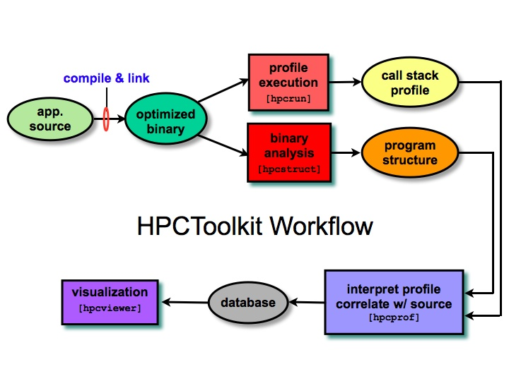

HPCToolkit is an open-source suite of multi-platform tools for profile-based performance analysis of applications. The figure below provides an overview of the toolkit components and their relationships.
- hpcrun / csprof: Measurement tools for profiling executions of unmodified fully-optimized application using statistical sampling of the system timer or hardware performance counters. The latter collects call path profiles, while the former collects flat profiles.
- hpcstruct: A binary analysis tool for recovering the static program structure of fully optimized object code. In particular, hpcstruct recovers source code procedures and loop nests, detects inlining, and associates procedures and loops with object code.
- hpcprof / hpcprof-flat: Profile interpretation and correlation tools. Specifically, these tools correlate call path and flat profile metrics with program structure to produce a performance database.
- hpcviewer: Sophisticated GUI for exploring databases consisting of performance information correlated with program source.
|

|
Supported platforms: x86-64/Linux, x86/Linux, IA64/Linux.
Platforms under development: Cray XT (Opteron + Compute Node Linux), IBM Blue Gene.
HPCToolkit is open-source software released with a BSD-like license.
Page last updated: 2008/06/14